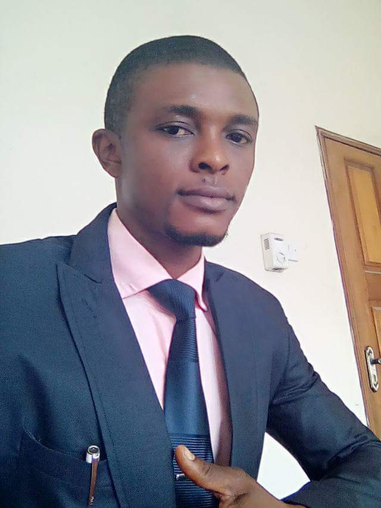

Comr. Duru George N.
Vice Chairman ASUP FPOG Chapter
Lecturer, Federal Polytechnic of Oil and Gas (FPOG) Bonny, Rivers State
He obtained B.Sc. in Sociology (Abia State University), M.Sc. in Criminology (University of Port Harcourt). Lecturer in Humanity and Social Sciences Unit, School of General Studies (SGS) Federal Polytechnic of Oil and Gas, Bonny Island. Acting Coordinator - Students' Continuous Assessment School of General Studies. He is the Pioneer and present Vice Chairman of Academic Staff Union of Polytechnics (ASUP), Federal Polytechnic of Oil and Gas Bonny Chapter. He has published many academic researched works/articles in notable Journals.